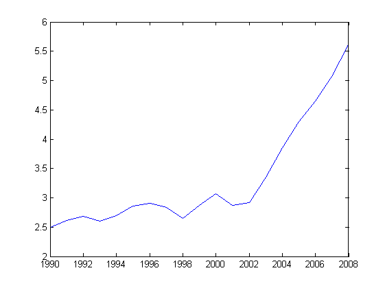
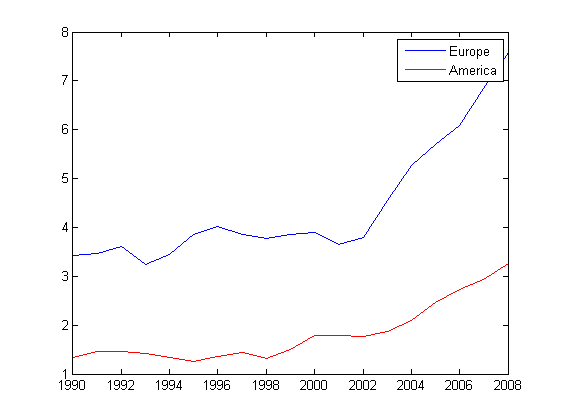

Exercise 3
Contents
Define a matrix Prices from column 2 to the end of the matrix data
load ../gasprices
data(1,2)=data(2,2);
Prices=data(:,2:end);
3.1 Calculate the average price for each country
mean(Prices)
ans =
Columns 1 through 9
2.3284 2.0868 4.4079 4.2247 4.6458 3.8205 1.7816 3.8358 4.3926
Column 10
1.5921
3.2 Plot the yearly average price for all countries
figure
plot(Year,mean(Prices'))

3.3 Plot the yearly average price in Europe and the Americas
ieur=[3 4 5 9];
iam=[2 7 10];
figure
plot(Year,mean(Prices(:,ieur)'))
hold on
plot(Year,mean(Prices(:,iam)'),'r')
legend('Europe','America');

Exercise 3b
Calculate the number of elements that are greater than 0.8
A=rand(1000);
sum(A(:)>.8)/numel(A)
ans =
0.1999